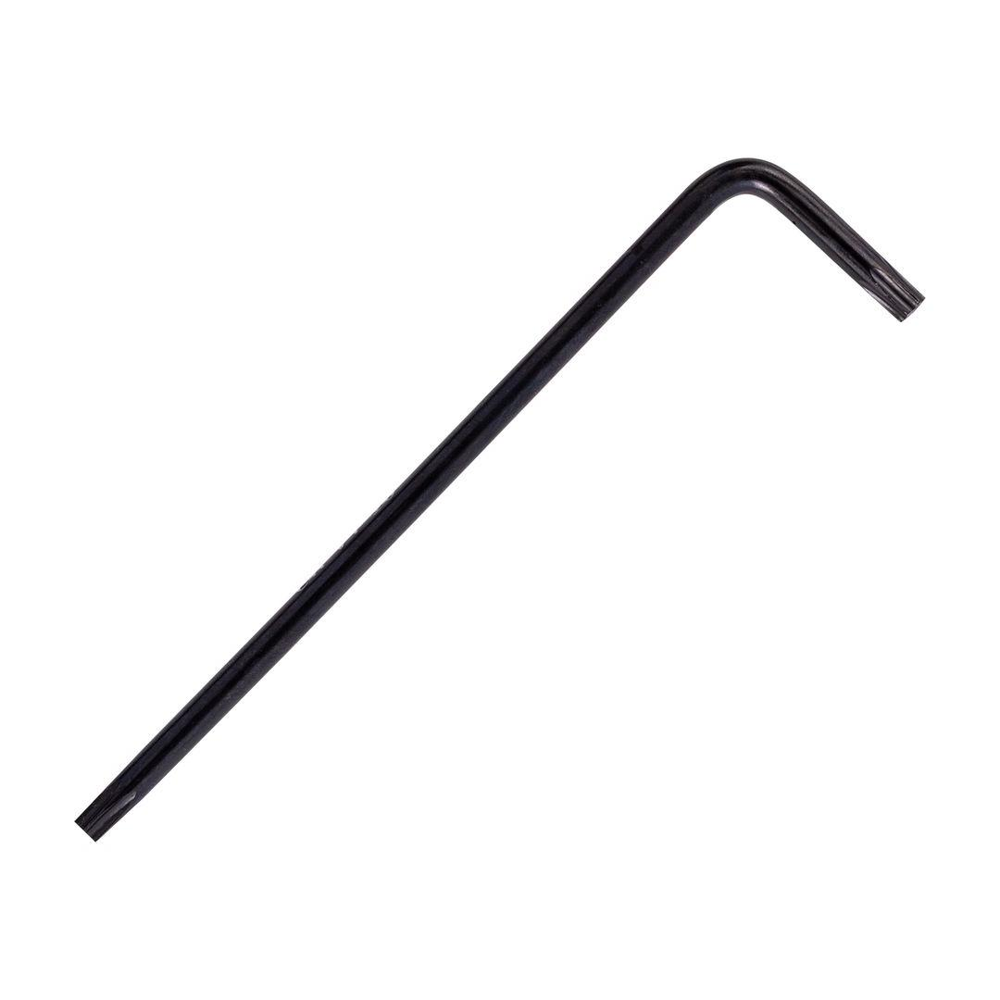

TCAK40020

Size: T20
Short side: 20mm
Long side: 95mm
An L-wrench torx key is a simple yet essential hand tool used to tighten or loosen bolts and screws with a torx socket head. It&s shaped like an "L," with a Torx bit at one end and a longer arm for leverage. This design allows for better grip and torque application compared to a standard Torx screwdriver.
Application: